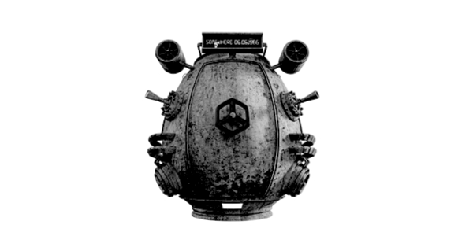
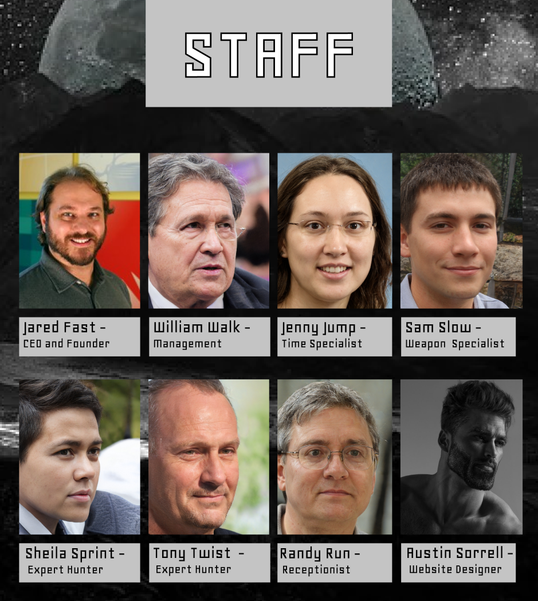

HISTORY:
Chronoshift Expeditions started with our founder Jared Fast. Using the intellect of one thousand A.I and saving the world twice he decided to make a time machine.


As many customers may know, time can be a very delicate object to mess with. But with the absolute brain power and unequivocal genius of our founder Jared Fast, the experience has been streamlined and made to be safer than ever before.
